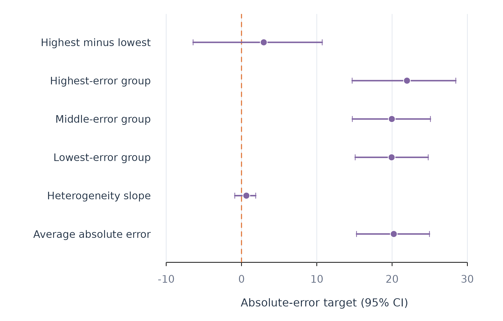

Repeated-Split Heterogeneity Analysis with fit_heterogeneity()
Source:vignettes/fit-heterogeneity.Rmd
fit-heterogeneity.RmdAnalytic question
fit_heterogeneity() tests whether a person-varying
quantity differs systematically across people. The target can be a
treatment effect, prediction error, or gain from individual rather than
pooled modelling. The function returns repeated-split estimates, sorted
groups, a heterogeneity slope, characteristics of extreme groups, and
learner-selection criteria.
fit_heterogeneity() separates proxy learning from
inference. One sample learns a machine-learning proxy for the
person-varying target. A held-out sample estimates average, grouped, and
heterogeneity quantities. Repeating and aggregating the split reduces
dependence on one random partition (Chernozhukov et al. 2020).
Standard errors cluster observations by person.
Study heterogeneity in prediction error
fit_heterogeneity() asks whether effort prediction error
varies predictably across learners. Linear and ridge proxies compete
over ten person-level random splits. Three sorted groups range from
lower to higher error.
heterogeneity_fit <- fit_heterogeneity(analysis_data, y = "effort", x = c("efficacy", "monitoring", "planning"), id = "name", target = "error", model = c("linear", "ridge"), num_splits = 10, n_groups = 3)
heterogeneity(heterogeneity_fit)
#> target model effect estimate std_error conf_low conf_high
#> 1 error ridge average 20.2253550 1.7855913 15.2771405 24.96474
#> 2 error ridge heterogeneity 0.6435549 0.5969202 -0.8915956 1.88939
#> 3 error ridge group:g1 19.9370663 2.1115599 15.0984244 24.79795
#> 4 error ridge group:g2 19.9644428 2.0247641 14.7204603 25.09312
#> 5 error ridge group:g3 21.9773560 2.8928578 14.6957330 28.46461
#> 6 error ridge group:top-bottom 2.9556581 3.0949341 -6.4277446 10.72051
#> p_value n n_people splits
#> 1 0.0001857984 933 6 10
#> 2 0.5792993199 933 6 10
#> 3 0.0004026063 933 6 10
#> 4 0.0003792906 933 6 10
#> 5 0.0012330464 933 6 10
#> 6 0.8202282399 933 6 10heterogeneity() reports an average absolute prediction
error of about 20.2 in Table 1. The highest-minus-lowest group contrast
is about 3.0, and its interval includes zero. The heterogeneity slope
interval also includes zero. The analysis does not find stable,
predictable error heterogeneity in this 12-learner subset.
Describe and compare learned proxies
clan() compares predictor means between extreme target
groups. learners() reports the criterion used to select the
proxy model.
clan(heterogeneity_fit)
#> target model variable estimate std_error conf_low conf_high p_value
#> 1 error ridge efficacy -25.86529 8.736283 -42.19034 -5.789263 0.1280360561
#> 2 error ridge monitoring -52.86498 5.479528 -63.46382 -42.450660 0.0004350839
#> 3 error ridge planning -30.30356 5.186209 -39.11614 -30.308775 0.0084234023
#> n n_people splits
#> 1 622 6 10
#> 2 622 6 10
#> 3 622 6 10
learners(heterogeneity_fit)
#> model lambda lambda_bar
#> 1 ridge 2.167416 409.5028
#> 2 linear 2.152740 409.5413clan() reports descriptive differences between extreme
predicted-error groups in Table 2. These differences describe the fitted
grouping and do not identify causes of prediction error.
learners() selects ridge by a small criterion difference in
Table 3.
Plot the heterogeneity estimates
The coefficient-and-interval display includes the average, heterogeneity slope, sorted groups, and extreme-group contrast. Unlike a point-only plot, it keeps the uncertainty required for the substantive conclusion.
heterogeneity_table <- heterogeneity(heterogeneity_fit)
heterogeneity_labels <- c(
average = "Average absolute error",
heterogeneity = "Heterogeneity slope",
`group:g1` = "Lowest-error group",
`group:g2` = "Middle-error group",
`group:g3` = "Highest-error group",
`group:top-bottom` = "Highest minus lowest"
)
labels <- unname(heterogeneity_labels[heterogeneity_table$effect])
forest_plot(heterogeneity_table$estimate, heterogeneity_table$conf_low,
heterogeneity_table$conf_high, labels,
xlab = "Absolute-error target (95% CI)", colour = fig_col["purple"])
Figure 1. Repeated-split estimates for average error and error heterogeneity.
Figure 1 shows similar estimates for the three error groups and wide uncertainty for their contrast. The heterogeneity-slope and highest-minus-lowest intervals cross zero, so this analysis does not establish systematic error heterogeneity.
Assumptions and failure checks
fit_heterogeneity() treats people as independent
clusters for the default person split. The number of independent people
limits precision even when each person contributes many rows. More
random splits reduce split sensitivity but do not create additional
independent units.
fit_heterogeneity() uses random rather than time-ordered
splits because its target is cross-person heterogeneity. The
gain target changes to occasion splits so each person
appears in both modelling samples. Forecast evaluation should use
fit_rolling() instead. A causal interpretation of the
cate target requires the same identification assumptions as
fit_effects().
When to use which
fit_heterogeneity() is appropriate for repeated-split
inference about a person-varying target. fit_effects() is
appropriate for direct average and sorted treatment-effect estimation
across model scopes. test_subgroups() is appropriate when
the question concerns discrete coefficient populations.
fit_rolling() is appropriate for change in prediction
performance over time.